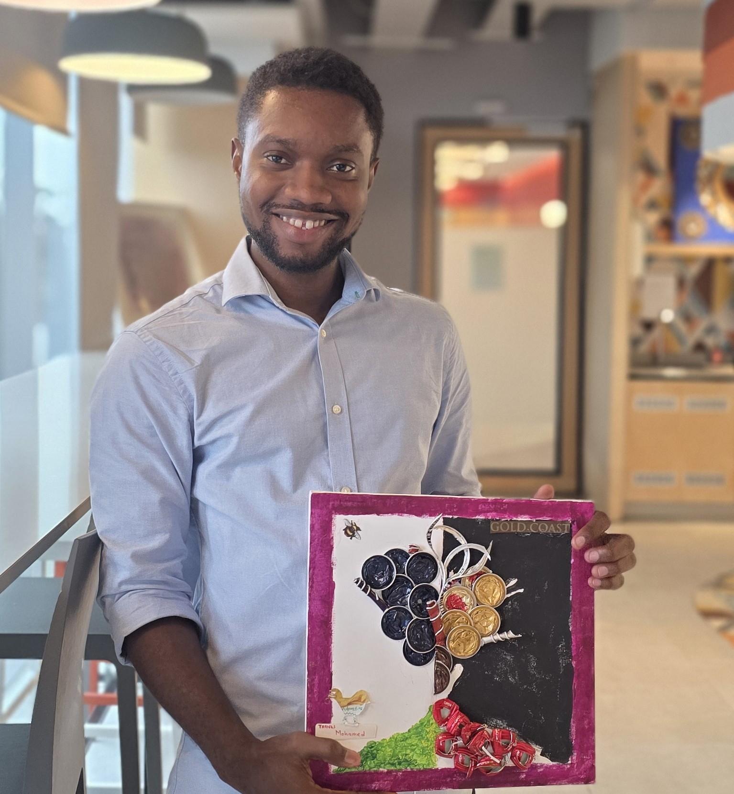
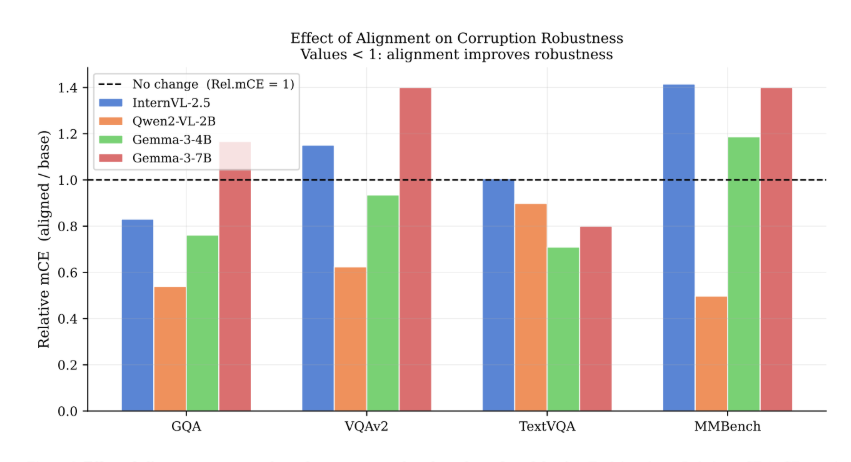
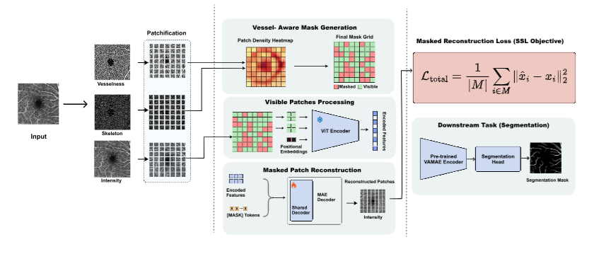
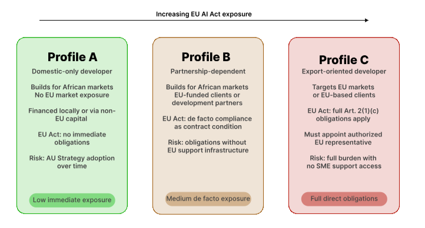
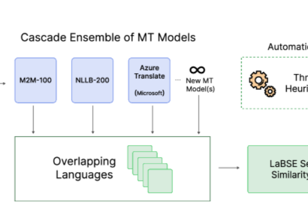
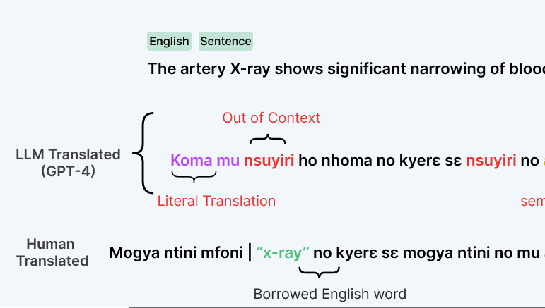

Hello and Welcome! I'm currently a Masters student at Ashesi University
and a Student Researcher at Google. Before that,
I earned my bachelor's degree in Computer Science from the University for Development Studies.
I spent some time after that as a research assistant, exploring generative models and their applications in healthcare under the guidance of
Prof. Mohammed Daabo.
I also interned at the SMART Lab of North Dakota State University fortunate to be advised by
Prof. Armstrong Aboah.
My research interest lies at the intersection of Biomedical NLP and NLP for low resource languages.
On the biomedical side, I am interested in Trustworthy Methodologies towards reliable Expert Medical AI Systems.
At ML Collective, I'm currently part of the Medical Imaging Group. Previously, I led Multimodal AI and the Self-Supervised Learning for Small Datasets in Healthcare focus group.
Besides my academic and research pursuits, I still enjoy farm life.
| May 2026 | 🎉 Both our papers on VLM robustness and Standard Takers, were accepted to the GCV Workshop at CVPR 2026 and the Future Technology Conference 2026, respectively. |
| Apr. 2026 | 📣 Our paper on VAMAE was accepted to ICPR 2026. |
| Mar. 2026 | Presented our AfriCaption work at EACL, 2026 in Rabat - Morocco. |
| Oct. 2025 | ✨ Excited to join Google as a Student Researcher. |
| Aug. 2025 | I'll be in Kigali, Rwanda for the Deep Learning Indaba 2025. Let's connect!. |
| May 2025 | Happy to share that our extended abstract got accepted as a Spotlight and Poster Presentation at IndabaXGhana 2025 |
| Dec. 2024 | I'm excited to share that I'll be virtually attending the NeurIPS 2024 Conference! Thanks to Gloabal South in AI. Let's connect on Whova. |
| Oct. 2024 | I'll be serving as a reviewer for the Machine Learning for Health (ML4H) Symposium 2024 |
| Sep 2024 | I'll be serving as a reviewer for WiML workshop co-located with NeurIPS 2024 |
| Aug 2024 | Accepted into the Black in AI's Emerging Leaders in AI Scholar's program |
| Jul 2024 | I'll be presenting our work on Multimodal Multilingual African Dataset at ML Collective's 22nd Research Jam. |
| Jul 2024 | Joined SMART Lab @ NDSU as a Research Intern. |
| Jun 2024 | Joined @Black in AI Community. |
| Apr 2024 | Reviewing applications for Deep Learning Indaba 2024. |
| Nov 2023 | Started RA @ C.K.T University of Technology and Applied Sciences. |

Prince Mireku, Kweku-Abeiku Attah-Anyen, Annaliese Nartey, Nicole Nanka-Bruce, Betty Blankson
GCV Workshop @ CVPR 2026.

Ilerioluwakiiye Abolade, Prince Mireku, Kelechi Chibundu, Peace Ododo, Emmanuel Idoko, Promise Omoigui, Solomon Odelola
International Conference on Pattern Recognition (ICPR), 2026

Standard Takers or Standard Makers? The EU AI Act, African AI Developers, and the Politics of Regulatory Transplantation
Prince Mireku, Betty Blankson, Joseph Kwame Adjei, Philip C. Aka
Future Technology Conference 2026.

Mardiyyah Oduwole, Prince Mireku, Fatimo Adebanjo, Oluwatosin Olajide, Mahi Aminu Aliyu, Jekaterina Novikova
AfricaNLP Workshop @ EACL, 2026.

Jackline Mireku, Prince Mireku
Ghana Data Science Summit 2025 as Spotlight & Poster Presentation.
See Google Scholar for all publications.
MSc. Intelligent Computing Systems
B.Sc. Computer Science
First Class Honours